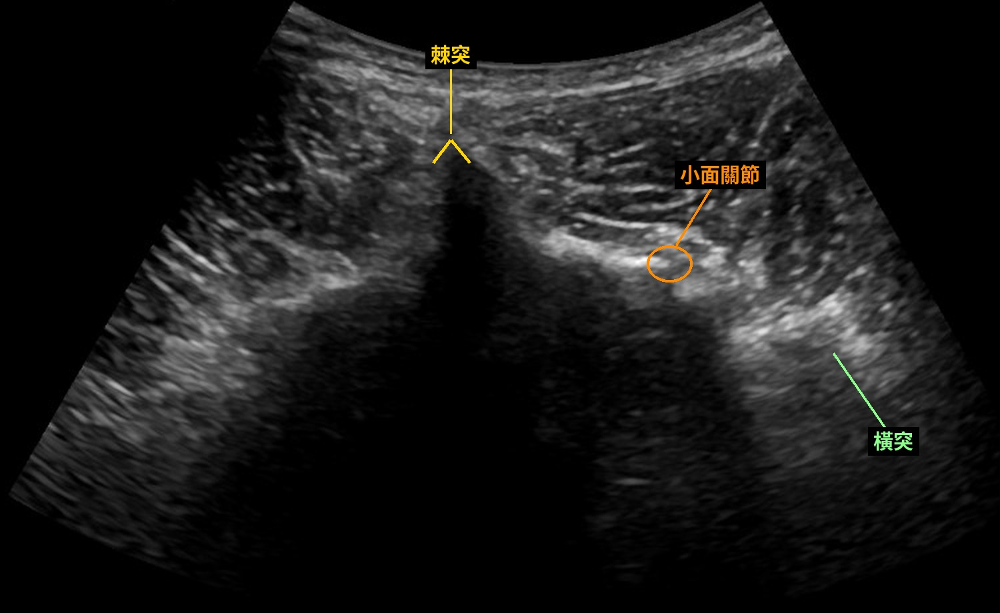

腰部後仰、轉身就痛：腰椎小面關節症候群
阿德說腰痛已經快一年：早上起床最僵，要慢慢「暖機」十幾分鐘才站得直；白天彎腰搬貨反而還好，最怕的是抬頭往高處貨架拿東西、或是站著轉身的那一下，腰的一側像被卡住，痠痛有時還會往屁股、大腿後面延伸，但不會麻到小腿。
聽到「往後仰、轉身最痛」，我腦中第一個浮現的，是腰椎小面關節。它和椎間盤、薦髂關節，並列下背痛最常被討論的三個來源，卻常常被一句「退化」帶過。
這篇想好好介紹這個關節：它在哪裡、為什麼會痛、怎麼和其他腰痛區分，以及中醫門診可以怎麼評估與安排治療。
一、小面關節在哪裡？
小面關節（facet joint），正式名稱是椎間關節（zygapophysial joint），是上下兩節脊椎後方、左右各一個的小關節。
如果把一節脊椎想成一個「三腳架」：前面一隻腳是椎間盤，後面兩隻腳就是左右兩個小面關節。三個支點一起分擔重量，也一起決定脊椎能往哪個方向動、動多少。
它的工作有兩個：
- 引導方向：腰椎的小面關節面偏向前後排列，允許彎腰、後仰，但限制過度的旋轉與前滑。
- 分擔壓力：站著時它就默默分擔一部分重量；身體往後仰、或椎間盤變薄時，壓力會往後移到小面關節上。
小面關節和膝蓋一樣，是有軟骨、滑膜、關節囊的「真正關節」，而且密布痛覺神經。負責傳遞它痛覺的，是脊神經後支的內側支（medial branch），每個小面關節都由上下兩條內側支共同支配——這也是後面評估與治療會一直提到的關鍵。
二、為什麼會痛？典型症狀長怎樣？
1. 常見的成因
小面關節痛很少是某一天突然發生的，多半是慢慢累積出來的。常見的背景有：
- 年紀與退化：椎間盤水分減少、高度變矮後，三腳架的前腳變短，重量就往後面兩隻腳壓。小面關節長期超載，軟骨磨損、關節增生，也就是很多人 X 光上看到的「骨刺」。
- 脊椎滑脫：上下椎體錯位時，小面關節要花更多力氣「勾住」下一節。
- 長時間後仰的姿勢與動作：長時間站立、挺腰、高跟鞋、反覆抬頭往高處工作，以及體操、羽球、高爾夫等需要後仰加旋轉的運動。
- 核心與臀肌力有未逮：腹部、臀部幫不上忙時，骨盆容易前傾，腰椎就站在一個「偏後仰」的位置上僵著。
2. 典型症狀
小面關節痛並沒有「一看就確定」的特徵，但常常會有下面這些線索：
- 痛在腰的側邊（單側或兩側），往往在脊椎中線旁邊一兩指寬的地方，是一種深層的痠痛。
- 後仰、後仰加轉身、久站時加重；彎腰、坐下來反而比較舒服。
- 早上起床僵硬，動一動會比較鬆；但一整天站下來，傍晚又會累積痠痛。
- 可能延伸到屁股、鼠蹊部或大腿後側，但很少超過膝蓋，也不照神經節段分布。這種「轉移痛」（referred pain）不是神經被壓到，而是大腦把深層關節的痛「放錯位置」。
- 咳嗽、打噴嚏通常不太會加重疼痛。
曾有綜合文獻的回顧分析發現，在慢性下背痛的病人中，經嚴謹診斷為小面關節痛的比例大約在 10%–20%，而且越年長比例越高。也就是說，它不是每個腰痛的答案，但在中年以後、久站反而更痛的人身上，很值得被放進考慮。
三、和椎間盤、薦髂關節怎麼分？
下背痛三大來源的症狀常常重疊，甚至同時存在。下面是門診常用的初步對照，只是方向，不是診斷：
| 對照項目 | 小面關節 | 椎間盤 | 薦髂關節 |
|---|---|---|---|
| 痛的位置 | 脊椎中線旁、腰的側邊 | 腰的中央，可伴隨腿痛 | 褲頭下方、屁股上緣小凹陷旁 |
| 什麼動作最痛 | 後仰、後仰加轉身、久站 | 彎腰、久坐、搬重物 | 由坐到站、爬樓梯、單腳站 |
| 什麼姿勢較舒服 | 彎腰、坐下 | 站起來走一走 | 不一定 |
| 咳嗽、打噴嚏 | 通常不太影響 | 可能加重 | 通常不太影響 |
| 延伸範圍 | 屁股、大腿後側，很少過膝 | 壓到神經根時可麻到小腿、腳 | 屁股、大腿後側或鼠蹊部 |
有兩個提醒：
- 「骨刺」不等於痛源。X 光或 MRI 上的小面關節退化非常普遍，很多完全不痛的人也看得到。影像可以幫忙排除其他問題，但不能單靠片子說「你就是小面關節痛」。
- 小面關節增生也會壓神經。退化肥大的小面關節、關節囊囊腫（synovial cyst），可能使椎間孔或椎管變窄。若出現麻到小腿、走一段路就腳麻要休息，就要更加考慮腰椎管狹窄或神經根壓迫，而不只是關節本身的痛。
四、門診怎麼評估？
1. 先問、再看動作
我會先問清楚疼痛的位置、什麼時候最痛、彎腰和後仰哪個更痛，並確認沒有需要緊急處理的紅旗警訊。
接著請病人做幾個動作：往前彎、往後仰、後仰加左右轉身（extension-rotation），再按壓脊椎中線兩旁、小面關節上方的位置，看能不能重現病人熟悉的那個痛。同時會檢查直抬腿、神經功能，以及薦髂關節與髖關節的誘發測試，把其他來源一起比對。
這裡要說一句實話：沒有任何一個理學檢查能單獨確診小面關節痛。曾有研究分析一組常被用來篩檢的症狀組合（年紀較大、咳嗽不痛、躺下會緩解等），發現它的敏感度不到 17%，特異度約 90%——符合的人確實較可能是小面關節痛，但不符合的人也無法排除。這就成了我在臨床上的判斷原則：病史、動作、觸診、影像要一起看，而且治療反應本身也是評估的一部分。
「後仰就痛」也是一樣。它是小面關節常見的線索，但腰椎管狹窄、脊椎解離、薦髂關節的問題，後仰時也常常會痛，所以只能當方向，不能單獨拿來下診斷。
2. 超音波能幫什麼忙
小面關節在皮膚下大約 4–5 公分深，周圍又被骨頭包著，超音波看不到關節內部的軟骨細節。但它在門診有三個很實際的用途：
- 定位節段：從薦椎往上數，確認痛點是 L4-5 還是 L5-S1 的小面關節。
- 比對周圍軟組織：觀察多裂肌、豎脊肌是否萎縮或左右不對稱，也一併檢查髂腰韌帶、薦髂韌帶等鄰近可能的痛源。
- 即時導引下針：治療時看得到骨面與針尖，讓針具準確到達小面關節外側、內側支通過的區域。曾有研究將超音波導引的針位再用 X 光確認，28 針中有 25 針準確到達目標，其餘 3 針也在 5 公釐以內。

至於神經根、椎管內部等更深層的問題，超音波看不完整，必要時仍需安排 X 光、MRI 等檢查。
五、中醫有哪些工具可以處理？
從中醫的角度，小面關節痛屬於「腰痛」「痹證」的範疇。久站勞損、姿勢不良，造成局部氣血瘀滯；年紀漸長則常合併肝腎不足、筋骨失養，遇到風寒濕邪又會讓僵硬痠痛加重。
身體只有一個，治療時我不刻意區分中醫或西醫，而是依照評估結果，從下面幾個工具中挑選組合：
1. 乾針
小面關節痛的人，周圍的多裂肌、豎脊肌、腰方肌常常「幫忙鎖住」疼痛的節段，變得緊繃或出現激痛點。用細針直接放鬆這些肌肉，可以先解開保護性的僵硬。
2. 超音波導引針刀
當疼痛確實集中在特定節段的小面關節周圍，可以在超音波即時導引下，用針刀處理關節囊外側與附著處的沾黏、增厚組織，讓局部重新獲得活動空間。看得到骨面、看得到針，下針更精準，也更能避開神經與血管。
3. 浮針
在皮下淺層操作，搭配病人主動做小幅度的後仰、轉身，適合急性期「一仰就卡」、還不太敢動的時候，先讓活動度回來。
4. 中藥調養
藉由中藥增進身體的修復能力。依體質與病程，常用的方向包括：
- 反覆痠痛、腰膝無力、遇冷加重：以補肝腎、強筋骨、祛風濕為主，例如獨活寄生湯加減。
- 痛點固定、夜間或久不動更僵：以活血化瘀、通絡止痛為主，例如身痛逐瘀湯加減。
- 腰部冷重、陰雨天加重：兼顧散寒除濕。
中藥須經醫師辨證後開立，請勿自行購買服用。
5. 運動處方
針灸、針刀可以先把痛降下來，但要長期穩定，重點是讓腰椎不要一直站在後仰的位置上硬撐：
- 骨盆後傾練習：仰躺屈膝，輕輕把腰貼向床面，學會「把骨盆收回來」的感覺。
- 前彎導向的伸展：例如抱膝、孩童式，在疼痛期讓小面關節「鬆開」一下。
- 髖屈肌伸展：髖屈肌太緊會把骨盆往前拉、讓腰更後仰，久坐族尤其需要。
- 核心與臀肌：例如死蟲式、鳥狗式、橋式，讓腹部與臀部分擔負荷，而不是靠腰硬頂。
- 生活習慣：久站時一腳踩在矮凳上、不要挺腰硬站；拿高處東西用小椅子，而不是抬頭後仰踮腳。
動作的選擇與強度，需依疼痛程度與評估結果調整，建議在醫師或物理治療師指導下進行。
6. 和物理治療師分工合作
- 醫師：用超音波評估痛源與節段，以針刀、乾針處理僵硬緊繃的組織，搭配中藥調養，先讓疼痛下降。
- 物理治療師：評估骨盆、髖關節與胸椎的活動度，用徒手治療創造關節空間，再把核心控制一步步整合回日常生活與運動動作。
腰後仰不好，有時問題不在腰本身，而是胸椎轉不動、髖關節伸不開，只好讓腰去補。中醫治療和物理治療不是二選一，而是在不同階段各自發揮作用。
六、治療前須知
- 先確認不是需要緊急處理的問題：若有腿部明顯無力、大小便失禁或排尿困難、會陰部麻木、發燒、不明原因體重減輕、夜間持續劇痛，或有腫瘤、骨質疏鬆病史，請盡快就醫，不建議先做局部治療。
- 侵入性治療有風險：乾針、針刀、浮針都可能出現局部瘀青、痠脹、短暫疼痛加劇，少數有感染、出血或暈針的可能。
- 需事先告知醫師：正在服用抗凝血藥物、有凝血功能異常、懷孕、糖尿病控制不佳、皮膚有傷口或感染，都需要事先說明，由醫師評估是否適合。
- 療程因人而異：每個人的退化程度、工作負荷與配合運動的情況不同，改善的速度也不同，治療計畫會隨每次評估調整。
七、重點結論
- 小面關節是脊椎後方左右各一的小關節，和椎間盤一起組成脊椎的「三腳架」，痛覺由內側支神經傳遞。
- 常見表現是脊椎中線旁的深層痠痛，後仰、轉身、久站加重，早上僵硬，可轉移到屁股與大腿後側但很少過膝。
- 沒有單一症狀或檢查能確診；X 光上的骨刺也不等於痛源，需要病史、動作、觸診與影像一起判斷。
- 超音波看不到關節內部，但能定位節段、比對周圍肌肉韌帶，並即時導引下針。
- 治療可結合乾針、超音波導引針刀、浮針與中藥調養；要長期穩定，需要核心與臀肌訓練，讓腰不再長時間站在後仰的位置上。
骨刺是年紀留下的痕跡，不一定是疼痛的答案——找對痛源，比看懂片子更重要。
本文僅供醫療衛生教育參考，不能取代醫師的診斷與治療。每個人的病情、體質與治療反應不同，文中提及的治療方式並非適用於所有人，亦不保證療效；侵入性治療可能伴隨副作用與風險。如有身體不適，請尋求合格醫療專業人員當面評估。
參考資料
- Cohen SP, Raja SN. Pathogenesis, diagnosis, and treatment of lumbar zygapophysial (facet) joint pain. Anesthesiology. 2007;106(3):591-614. DOI
- Van den Heuvel SAS, Cohen SPC, de Andrès Ares J, et al. 3. Pain originating from the lumbar facet joints. Pain Pract. 2024;24(1):160-176. DOI
- Laslett M, Öberg B, Aprill CN, McDonald B. Zygapophysial joint blocks in chronic low back pain: a test of Revel's model as a screening test. BMC Musculoskelet Disord. 2004;5:43. DOI
- Greher M, Scharbert G, Kamolz LP, et al. Ultrasound-guided lumbar facet nerve block: a sonoanatomic study of a new methodologic approach. Anesthesiology. 2004;100(5):1242-1248. DOI
- Hooten WM, Cohen SP. Evaluation and treatment of low back pain: a clinically focused review for primary care specialists. Mayo Clin Proc. 2015;90(12):1699-1718. DOI